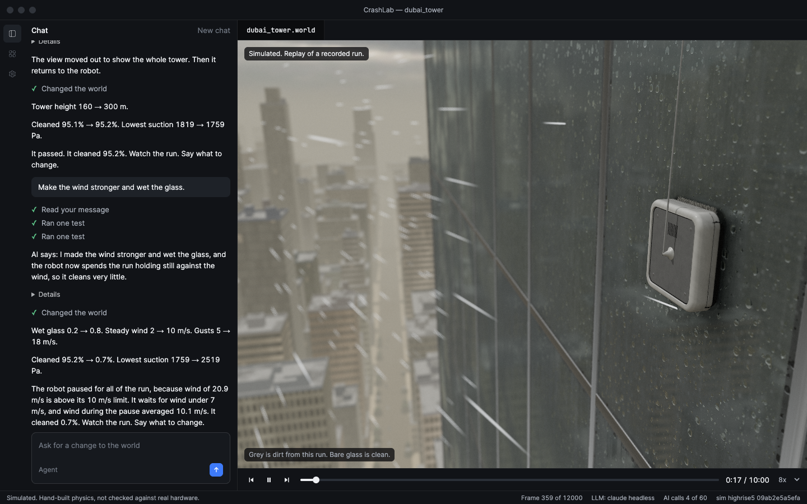

Simulation workspace
Start with the robot.
Choose a robot, open a world, and put its controller under pressure.
Choose a robot
2 availableTest the operating envelope
Change the glass, weather and tower geometry. Watch where the controller holds, slips or loses contact.
- Environment
- Glass tower
- Campaign
- 33 worlds run
- Physics
- Hand-built
Opens the simulator in this workspace.
dubai_tower.worldRecorded run Safe hold

Simulated / Window cleaningOne world. Every decision visible.
Inspect the controller’s response before you launch a campaign.